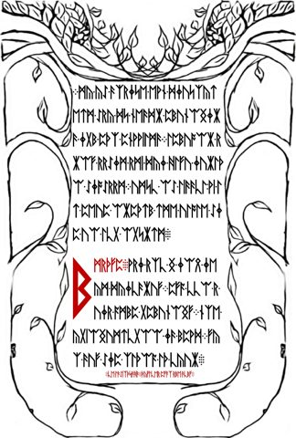

William Blake and The Marriage of Heaven and Hell
The holy-life sentence on LP1-04, its literary parallel, and the limits of source and artwork attribution.
On this page
LP1-04 contains a close verbal parallel to the ending of William Blake's The Marriage of Heaven and Hell. It is a concrete comparison worth following; it does not establish that every philosophical or visual feature of Liber Primus comes from Blake.
The wording, side by side
| Source | Text | Location |
|---|---|---|
| Liber Primus, contextual English | FOR ALL THAT LIVES IS HOLY | LP1-04, after the statement about each intelligence |
| Blake | For everything that lives is holy. | Final sentence of the Chorus following A Song of Liberty |
The wording is close but not identical: “all” replaces “everything.” The literal manuscript labels read FOR-ALL-THAT-LIUES-IS-HOLY after joining the archive's line wrap. LIVES is the contextual interpretation of LIUES, not an extra change to the rune stream. See the complete Welcome reading and literal-reading conventions.
Check the external sentence in Project Gutenberg's transcription of the 1906 edition, under Chorus near the end. This edition's printed page numbers are not identifiers for the original illuminated plates.
What the comparison supports
The shared wording supports describing this as a close verbal parallel and a plausible Blake allusion. The manuscript passage does not name Blake. A parallel cannot establish whether the authors consulted his work directly, encountered a quotation elsewhere, or intended the surrounding book to function as a key. Those are separate hypotheses.
For cipher work, a possible reference becomes a candidate source only after specifying a rule. Which edition, passage, characters, normalization and transformation? Choosing these after seeing promising fragments changes the scope of the test. Use the reproducibility guide and Have we tried it? to distinguish a source comparison from a documented technique test.
Read the surrounding argument
Blake's work also treats inward divinity and the limits of perception. In The Voice of the Devil, reason is described in relation to the outward circumference of energy. These provide additional comparison points with Liber Primus's Loss of Divinity and second koan. They are thematic or vocabulary comparisons, weaker than the closely matched final sentence. Similar words do not ensure identical meanings.
Within Liber Primus, the holy-life statement follows claims about the individual and intelligence, and precedes an instruction to command oneself. In Blake, the sentence closes a Chorus addressing religious authority and restrictions. Reading both settings prevents the shared line from becoming an isolated code token with no literary context. The philosophical themes guide traces the manuscript's internal connections.
The shared word “circumference”
In The Voice of the Devil, Blake describes reason as the “bound or outward circumference of Energy.” The sentence is on printed page 8 of the linked 1906 transcription. Its immediate subject is the relationship between body, soul, energy, and reason; “circumference” supplies a boundary metaphor.
Compare that with the manuscript’s three circumference passages. The Loss of Divinity assigns behaviors to the circumference. The second koan associates it with the voice of the I. The parable asks for circumferences to be shed. These are different grammatical and narrative uses, even though they share the unusual term and a possible idea of limitation.
| Comparison | What the wording supports | What remains unestablished |
|---|---|---|
| Blake’s outward circumference and the manuscript’s circumference | A specific vocabulary parallel worth examining beside the known holy-life parallel. | That the manuscript uses “circumference” as an exact synonym for Blake’s reason. |
| Reason in the two works | Both texts place reason in a critical discussion rather than treating it as an unquestioned authority. | That their criticism has the same target: the manuscript explicitly questions following reason for belonging and being right. |
This distinction matters when interpreting the koan. The student’s inner voice is not automatically identical to reason, and a boundary metaphor is not automatically a geometric instruction. A useful reading needs to account for how the word behaves in each passage, not only its presence in both books.
Divinity within: another comparison to inspect
After the Proverbs of Hell, Blake’s prose account of poetic deities and priesthood ends with deities residing in the human breast. This passage is on printed pages 20–21 of the 1906 transcription. Its immediate concern is how poetic personifications become objects of religious authority.
Liber Primus’s final parable instead places inward divinity within a sequence of shedding and emergence. Both direct the reader inward, but the parable does not repeat Blake’s account of the origin of priesthood. This is a thematic comparison, rather than the close sentence-level match in the holy-life statement.


The illustrated cover, the holy-life sentence, and these vocabulary comparisons are distinct pieces of evidence. Taken together they make Blake a concrete source to investigate. They still do not establish that every manuscript idea came from Blake, or that a particular edition was used as a cipher key.
The illustrated cover and other artwork comparisons
The compasses collage, archived as 1033.jpg, provides a separate visual connection to Blake. That entry displays the original and documents the published identifications of Newton, The Ancient of Days and Nebuchadnezzar.
Blake's work exists in distinct illuminated copies. The William Blake Archive's publication note for copy A records nine complete extant copies and separately identifies partial copies. An artwork comparison should identify the work, copy and plate or object, not merely link an image search for “Blake.”
For proposed connections elsewhere in the manuscript, pair the exact manuscript image with a catalogued source image, identify corresponding figures and composition, and record differences such as reversal, cropping or added objects. A general resemblance in flames, figures or ornament is a starting observation, not an attribution. Keep that comparison separate from a claim that the text supplies a decryption key.
How to check the textual comparison
- Open LP1-04 in the reader and compare the original with the literal reading.
- Follow the Welcome reproduction instructions to obtain the decoded sequence. Keep original spellings available.
- Open the Gutenberg source above, find the Chorus after A Song of Liberty, and compare the sentence word by word.
- For the other comparisons, find “outward circumference” in The Voice of the Devil and “human breast” in the prose after Proverbs of Hell. Read the surrounding paragraphs. Printed page numbers here belong to this edition, not to manuscript pages or illuminated plate identifiers.
- Record the agreement and differences for each passage. Do not promote a likely allusion into a claim of authorship or a verified cipher result.
Sources and status
Manuscript evidence: LP1-04 source record and known readings, dated to the 5 October 2026 snapshot. External text: William Blake, The Marriage of Heaven and Hell, Gutenberg edition 45315. Copy context: the William Blake Archive note linked above. Textual comparisons checked on 20 October 2026. This documents a literary parallel, not a newly completed cryptanalytic experiment.
Manuscript pages discussed
LP1-04 · LP1-10 · LP1-11 · LP1-12 · LP1-13 · LP1-14 · LP1-15 · LP2-57
Guides linking here
- Start solving: a practical introduction
- Philosophical themes in Liber Primus
- Referenced works and possible influences
- Four unreasonable things and Lewis Carroll
- The illustrated cover: compasses and Blake artwork
- Newton: the upper compasses panel
- The Ancient of Days: the lower compasses panel
- Circumference, identity, and emergence
- Primality and divinity
- Urizen: measurement and limits in Blake
- Pilgrimage, selfhood, and the Welcome